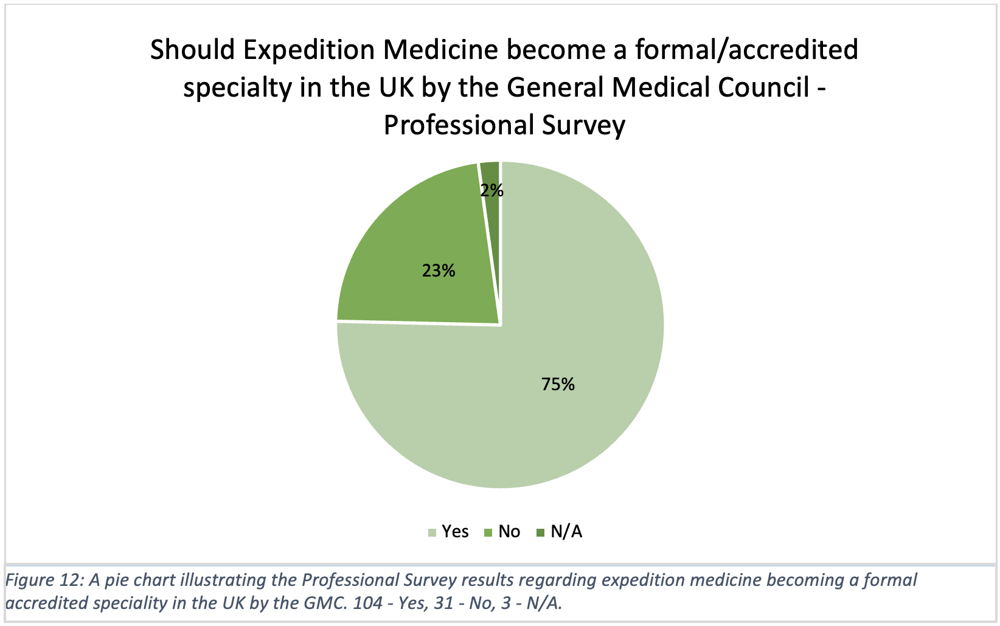
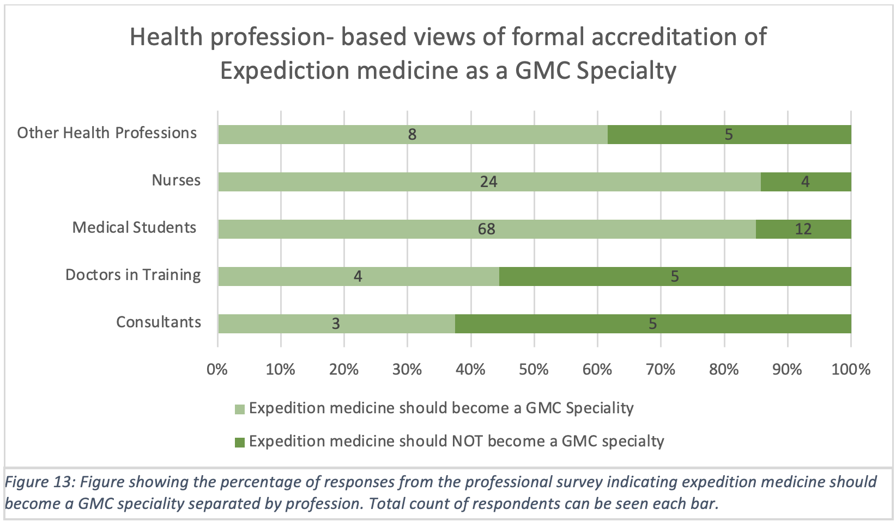
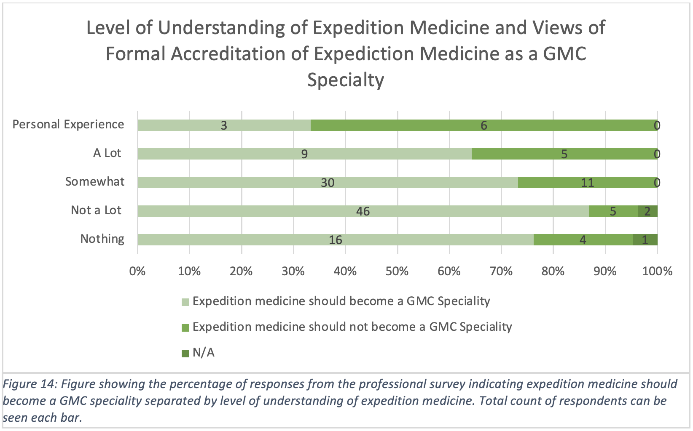
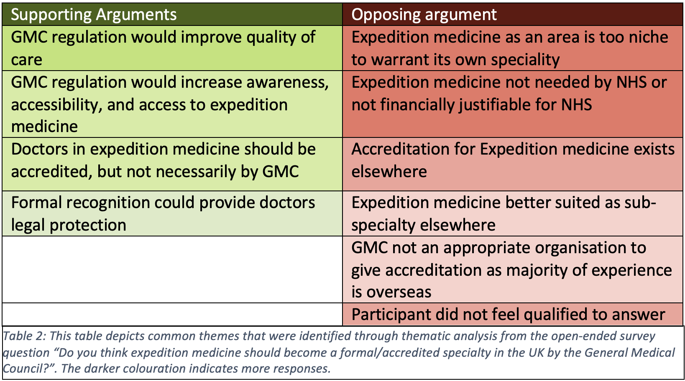
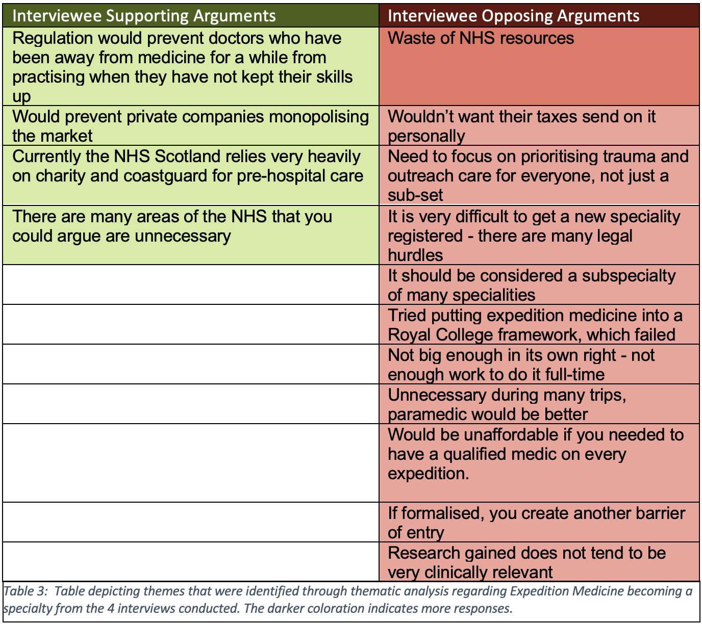

When assessing the data and research surrounding the opinion and reasons behind implementing Expedition Medicine as a specialty the interviews, survey, and literature review can all be looked at homogeneously to identify the main themes.
The results of the professional survey found that 75.4% (104/138) of respondents thought Expedition Medicine should become a formal specialty in the UK (Figure 12). Similar to the pattern seen in training, when segregated by profession, the results indicated less support from consultants and doctors in training at 37.5% (3/8) and 44.4% (4/9) respectively, and more support from nurses and medical students at 85.7% (24/28) and 85% (68/80) respectively (Figure 13).
An emerging theme was identified when exploring the link between the level of understanding of Expedition Medicine, and whether it should become a specialty. Survey respondents with more knowledge or experience of the topic showed less support for it becoming a specialty. Only 33.3% (3/9) of those with expedition experience supported it as a specialty compared to 90.6% (48/53) of people who “don’t know a lot” about Expedition Medicine (Figure 14).
  Arguments For
Thematic analysis of open-ended survey questions revealed common themes both in support and against Expedition Medicine becoming a specialty (Table 2). In support of the proposal, quality of care emerged as the most common theme. Conversely, financial justification and the small size of the field were commonly mentioned counterarguments. Thematic analysis of the interviews highlighted similar themes (Table 3). However, none of the interviewees supported Expedition Medicine as a specialty. Therefore, the arguments against Expedition Medicine were more readily identified with primary themes of lacking NHS resources and legal barriers.
Reviewing the literature, several positives for implementing the specialty of Expedition Medicine were identified. One study (14) showed that the implementation of a ‘Special Skills Post’ in Expedition Medicine to GPs in Tasmania allowed them to expand their skills both personally and professionally. Similarly, research has shown that Expedition Medicine training can lead to an increase in job satisfaction (15). In a post-pandemic NHS, a greater number of medical practitioners are reporting burnout and increased stress levels (16). Therefore, allowing doctors to pursue areas of interest to them, such as Expedition Medicine, may improve well-being and ultimately result in better patient care provided by more resilient and well-rounded doctors.
The survey findings showed 75% (104/138) of medical professionals and students were in support of Expedition Medicine becoming a specialty. An interesting finding from the research was that 85% (68/80) of medical students surveyed believe Expedition Medicine should become a formal specialty, 10% higher than the total sample of professionals surveyed. This might suggest that future doctors are keen to create new avenues for career development. Medicine is a changing profession, and the views of the next generation of doctors must be considered.
The interviews conducted provided additional insights into the potential benefits of establishing Expedition Medicine as a specialty. In particular, it was suggested that formal recognition as a specialty would prevent doctors who have not been practising for an extended period of time, from providing care on expeditions when their skills may not be of an appropriate standard. This is of vital importance as there is the potential for patient safety to be compromised.
Finally, regulating the specialty through a public body would prevent private companies from monopolising the market and potentially worsening inequalities within the field. However, formalisation of the specialty would introduce a new requirement for a qualification from all doctors wishing to practise Expedition Medicine which does not currently exist. Instead, a compromise of limited required qualifications that are financially accessible by price-regulated fees would be optimal.
 Arguments Against
Alternatively, if prior knowledge of Expedition Medicine is factored into the results, they can be viewed in a very different light. For example, over two-thirds of respondents 67% (6/9) who work as expedition medics believed Expedition Medicine should not become a specialty. This theme aligns with majorities against the prospect within both the ‘consultants’ and ‘doctors in training’ demographics. These respondents are arguably some of the most highly trained and experienced people in healthcare and expedition environments, whose decisions are trusted and relied on.
Further support for this position was identified in the survey and interview comments, where the theme of diverting scarce NHS resources was highlighted. There were concerns regarding a public-funded body, which is struggling both financially and with staff retention, providing a specialty whose benefits are reaped by private practice. Apprehension of how the tax-payer may view this was expressed in interviews, and it was suggested that NHS resources would be better justified elsewhere. For example, it has been shown that increasing NHS resources in deprived areas reduces the overall healthcare-amenable mortality rate (17). This is apparent in times of healthcare professionals striking due to real-term pay cuts, the prolonged impact of COVID with increased waiting times for urgent care and elective procedures, and a higher rate of professionals leaving the NHS (18). An interviewee suggested that resources could be better utilised within other areas of prehospital medicine, such as widening the trauma network and reducing the current reliance on charities (e.g. Scottish Air Ambulance), increasing accessibility and healthcare outreach.
More comments centred on the bureaucratic and legal hurdles of formalising a specialty, and who would be responsible for regulating it. It was mentioned that the GMC may not be the most appropriate body for this, as the majority of work expedition medics do is overseas which the GMC is unable to regulate. This concern for the lack of regulation links with current guidance from The Royal College of Surgeons Edinburgh (19) stating there are no requirements or set standards of care within Expedition Medicine as a field of practice. An interviewee suggested that an alternative approach could be to incorporate it as an area of special interest within a current, registered specialty, such as Emergency Medicine, or Sport and Exercise Medicine.
Other comments expressed concern that Expedition Medicine is too niche an area to warrant its own specialty, and further comments from expedition members stated they felt it was an unnecessary role for the majority of expeditions. One interviewee suggested a paramedic, with the support of an on-call doctor available in the UK, would be better suited for the role.
Return To Findings“This site was made by a group of University of Edinburgh medical students who studied this subject as part of the SSC. This webfolio has not been peer reviewed. We certify that this webfolio is our own work and that we have authorisation to use all the content (e.g. figures / images) used in this webfolio”
Tutor = Dr Oliver Vick (Oliver.Vick@ed.ac.uk)
Word Count = 1054
Home